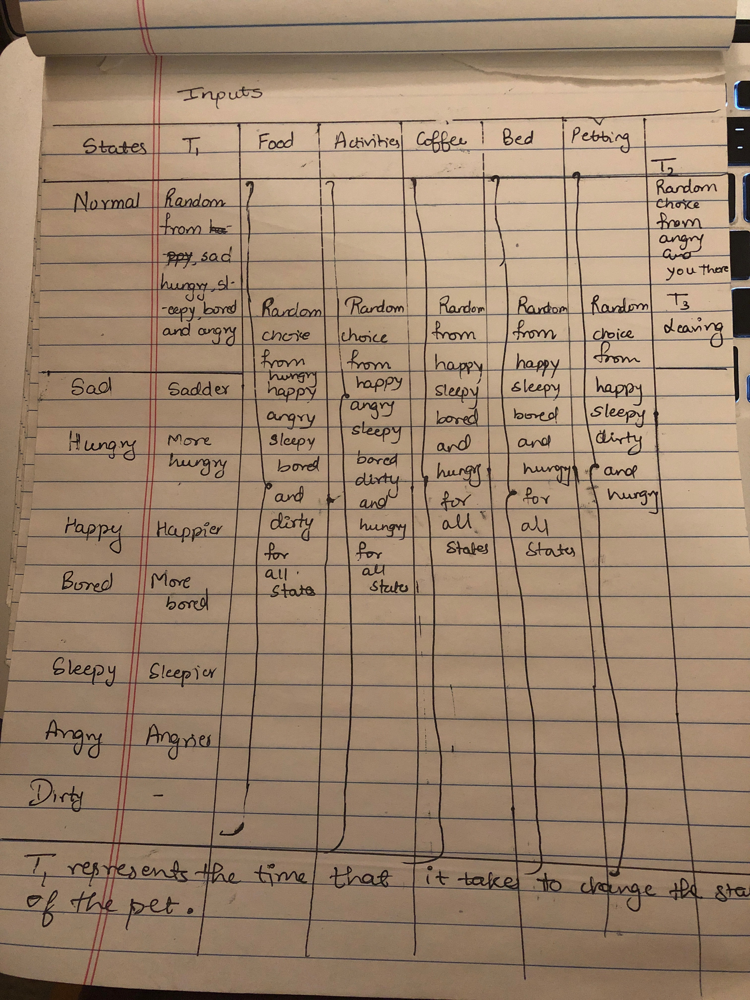
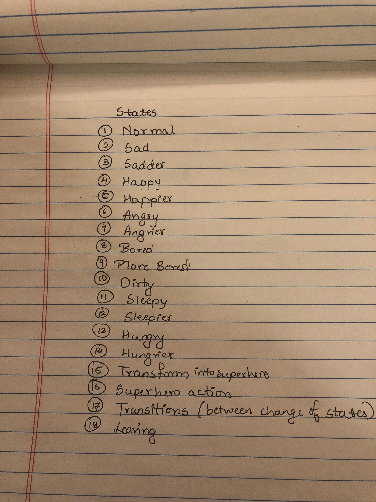

DOCUMENTATION VIRTUAL PET PROJECT
Back Story:
It was a cold windy night at Drexel. I was walking down the street right across my dorm.
Suddenly I saw a squirrel fly by me. It was very quick to notice that I had seen it. It turned around and flew towards me with immense speed.
'The prophecy has been fulfilled' it said. I was freaking out because I had just seen a flying squirrel talk in a superhero suit.
'The prophecy said that the person who sees me in my superhero consume for the first time becomes my owner.' it continued.
At this point, I was terrified, a speaking squirrel wants to be my pet. I tried running away from there, but it kept following me.
It made me agree to adopt it and keep it as my pet or else it threated to beat me up. And that is how squirrel became my pet.
Reasons behind the state transitions:
The squirrel as said on the website is a very moody pet. I wanted it to feel like it was like a real pet and not a superficial one.
So, I included a lot of random emotions and almost every emotion is possible after every button that is clicked because real animals
sometimes get angry when you pet them too.


The pet also transitions whenever a button is pressed which depict the activity happening.
So, there are a few transition states that haven't been listed here which can only be achieved on pressing buttons and do not affect the state of the pet.
Documentation:
The code runs the html body element part first which uses the onload attribute to link it to function changeMood which contains setTimeout instructions.
These instructions change the state of the pet over time. These setTimeout instructions make the pet have negative emotions and eventually leaving as the user
does not interact with the pet. The rest of the body code in html creates images which, on clicked, execute code for their respective functions.
The reason for having a separate function for each of the onclick events is that it allows me to put in a few different pictures and also allows me to have
Each of the onClick function link to a function named same as their id and the function has further setTimeouts which link to at least two functions depicting the activity
and a third one giving the reaction of the pet. Whenever the activity is executed they are chosen from a random reaction where each one of them holds an equal probability.
All the onclick events have clearTimeouts for clearing any of the previous setTimeout attributes still remaining.
The math.random( ) function is used to make the value of the variable random. Math.floor() is used to get the closest integer to the value given out by math.random()*n
There is also a special button called transform which transforms the squirrel into a superhero but there is only a ½ probability of that taking place.